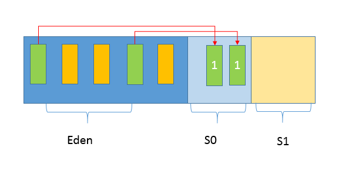
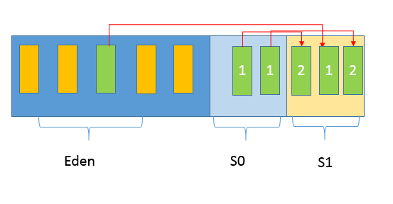
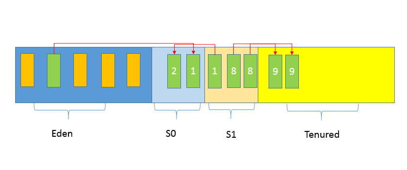
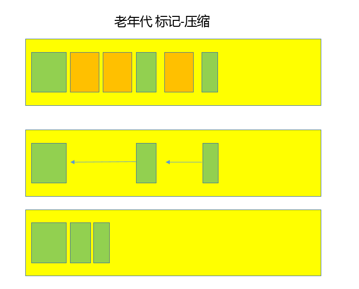

- 00 开篇词 以面试题为切入点，有效提升你的Java内功.md
- 01 谈谈你对Java平台的理解？.md
- 02 Exception和Error有什么区别？.md
- 03 谈谈final、finally、 finalize有什么不同？.md
- 04 强引用、软引用、弱引用、幻象引用有什么区别？.md
- 05 String、StringBuffer、StringBuilder有什么区别？.md
- 06 动态代理是基于什么原理？.md
- 07 int和Integer有什么区别？.md
- 08 对比Vector、ArrayList、LinkedList有何区别？.md
- 09 对比Hashtable、HashMap、TreeMap有什么不同？.md
- 10 如何保证集合是线程安全的_ ConcurrentHashMap如何实现高效地线程安全？.md
- 11 Java提供了哪些IO方式？ NIO如何实现多路复用？.md
- 12 Java有几种文件拷贝方式？哪一种最高效？.md
- 13 谈谈接口和抽象类有什么区别？.md
- 14 谈谈你知道的设计模式？.md
- 15 synchronized和ReentrantLock有什么区别呢？.md
- 16 synchronized底层如何实现？什么是锁的升级、降级？.md
- 17 一个线程两次调用start()方法会出现什么情况？.md
- 18 什么情况下Java程序会产生死锁？如何定位、修复？.md
- 19 Java并发包提供了哪些并发工具类？.md
- 20 并发包中的ConcurrentLinkedQueue和LinkedBlockingQueue有什么区别？.md
- 21 Java并发类库提供的线程池有哪几种？ 分别有什么特点？.md
- 22 AtomicInteger底层实现原理是什么？如何在自己的产品代码中应用CAS操作？.md
- 23 请介绍类加载过程，什么是双亲委派模型？.md
- 24 有哪些方法可以在运行时动态生成一个Java类？.md
- 25 谈谈JVM内存区域的划分，哪些区域可能发生OutOfMemoryError_.md
- 26 如何监控和诊断JVM堆内和堆外内存使用？.md
- 27 Java常见的垃圾收集器有哪些？.md
- 28 谈谈你的GC调优思路_.md
- 29 Java内存模型中的happen-before是什么？.md
- 30 Java程序运行在Docker等容器环境有哪些新问题？.md
- 31 你了解Java应用开发中的注入攻击吗？.md
- 32 如何写出安全的Java代码？.md
- 33 后台服务出现明显“变慢”，谈谈你的诊断思路？.md
- 34 有人说“Lambda能让Java程序慢30倍”，你怎么看？.md
- 35 JVM优化Java代码时都做了什么？.md
- 36 谈谈MySQL支持的事务隔离级别，以及悲观锁和乐观锁的原理和应用场景？.md
- 37 谈谈Spring Bean的生命周期和作用域？.md
- 38 对比Java标准NIO类库，你知道Netty是如何实现更高性能的吗？.md
- 39 谈谈常用的分布式ID的设计方案？Snowflake是否受冬令时切换影响？.md
- 周末福利 谈谈我对Java学习和面试的看法.md
- 结束语 技术没有终点.md
27 Java常见的垃圾收集器有哪些？
垃圾收集机制是Java的招牌能力，极大地提高了开发效率。如今，垃圾收集几乎成为现代语言的标配，即使经过如此长时间的发展， Java的垃圾收集机制仍然在不断的演进中，不同大小的设备、不同特征的应用场景，对垃圾收集提出了新的挑战，这当然也是面试的热点。
今天我要问你的问题是，Java常见的垃圾收集器有哪些？
典型回答
实际上，垃圾收集器（GC，Garbage Collector）是和具体JVM实现紧密相关的，不同厂商（IBM、Oracle），不同版本的JVM，提供的选择也不同。接下来，我来谈谈最主流的Oracle JDK。
- Serial GC，它是最古老的垃圾收集器，“Serial”体现在其收集工作是单线程的，并且在进行垃圾收集过程中，会进入臭名昭著的“Stop-The-World”状态。当然，其单线程设计也意味着精简的GC实现，无需维护复杂的数据结构，初始化也简单，所以一直是Client模式下JVM的默认选项。- 从年代的角度，通常将其老年代实现单独称作Serial Old，它采用了标记-整理（Mark-Compact）算法，区别于新生代的复制算法。- Serial GC的对应JVM参数是：
-XX:+UseSerialGC
- ParNew GC，很明显是个新生代GC实现，它实际是Serial GC的多线程版本，最常见的应用场景是配合老年代的CMS GC工作，下面是对应参数
-XX:+UseConcMarkSweepGC -XX:+UseParNewGC
-
CMS（Concurrent Mark Sweep） GC，基于标记-清除（Mark-Sweep）算法，设计目标是尽量减少停顿时间，这一点对于Web等反应时间敏感的应用非常重要，一直到今天，仍然有很多系统使用CMS GC。但是，CMS采用的标记-清除算法，存在着内存碎片化问题，所以难以避免在长时间运行等情况下发生full GC，导致恶劣的停顿。另外，既然强调了并发（Concurrent），CMS会占用更多CPU资源，并和用户线程争抢。
-
Parallel GC，在早期JDK 8等版本中，它是server模式JVM的默认GC选择，也被称作是吞吐量优先的GC。它的算法和Serial GC比较相似，尽管实现要复杂的多，其特点是新生代和老年代GC都是并行进行的，在常见的服务器环境中更加高效。- 开启选项是：
-XX:+UseParallelGC
另外，Parallel GC引入了开发者友好的配置项，我们可以直接设置暂停时间或吞吐量等目标，JVM会自动进行适应性调整，例如下面参数：
-XX:MaxGCPauseMillis=value
-XX:GCTimeRatio=N // GC时间和用户时间比例 = 1 / (N+1)
- G1 GC这是一种兼顾吞吐量和停顿时间的GC实现，是Oracle JDK 9以后的默认GC选项。G1可以直观的设定停顿时间的目标，相比于CMS GC，G1未必能做到CMS在最好情况下的延时停顿，但是最差情况要好很多。- G1 GC仍然存在着年代的概念，但是其内存结构并不是简单的条带式划分，而是类似棋盘的一个个region。Region之间是复制算法，但整体上实际可看作是标记-整理（Mark-Compact）算法，可以有效地避免内存碎片，尤其是当Java堆非常大的时候，G1的优势更加明显。- G1吞吐量和停顿表现都非常不错，并且仍然在不断地完善，与此同时CMS已经在JDK 9中被标记为废弃（deprecated），所以G1 GC值得你深入掌握。
考点分析
今天的问题是考察你对GC的了解，GC是Java程序员的面试常见题目，但是并不是每个人都有机会或者必要对JVM、GC进行深入了解，我前面的总结是为不熟悉这部分内容的同学提供一个整体的印象。
对于垃圾收集，面试官可以循序渐进从理论、实践各种角度深入，也未必是要求面试者什么都懂。但如果你懂得原理，一定会成为面试中的加分项。在今天的讲解中，我侧重介绍比较通用、基础性的部分：
-
垃圾收集的算法有哪些？如何判断一个对象是否可以回收？
-
垃圾收集器工作的基本流程。
另外，Java一直处于非常迅速的发展之中，在最新的JDK实现中，还有多种新的GC，我会在最后补充，除了前面提到的垃圾收集器，看看还有哪些值得关注的选择。
知识扩展
垃圾收集的原理和基础概念
第一，自动垃圾收集的前提是清楚哪些内存可以被释放。这一点可以结合我前面对Java类加载和内存结构的分析，来思考一下。
主要就是两个方面，最主要部分就是对象实例，都是存储在堆上的；还有就是方法区中的元数据等信息，例如类型不再使用，卸载该Java类似乎是很合理的。
对于对象实例收集，主要是两种基本算法，引用计数和可达性分析。
-
引用计数算法，顾名思义，就是为对象添加一个引用计数，用于记录对象被引用的情况，如果计数为0，即表示对象可回收。这是很多语言的资源回收选择，例如因人工智能而更加火热的Python，它更是同时支持引用计数和垃圾收集机制。具体哪种最优是要看场景的，业界有大规模实践中仅保留引用计数机制，以提高吞吐量的尝试。- Java并没有选择引用计数，是因为其存在一个基本的难题，也就是很难处理循环引用关系。
-
另外就是Java选择的可达性分析，Java的各种引用关系，在某种程度上，将可达性问题还进一步复杂化，具体请参考[专栏第4讲]，这种类型的垃圾收集通常叫作追踪性垃圾收集（Tracing Garbage Collection）。其原理简单来说，就是将对象及其引用关系看作一个图，选定活动的对象作为 GC Roots，然后跟踪引用链条，如果一个对象和GC Roots之间不可达，也就是不存在引用链条，那么即可认为是可回收对象。JVM会把虚拟机栈和本地方法栈中正在引用的对象、静态属性引用的对象和常量，作为GC Roots。
方法区无用元数据的回收比较复杂，我简单梳理一下。还记得我对类加载器的分类吧，一般来说初始化类加载器加载的类型是不会进行类卸载（unload）的；而普通的类型的卸载，往往是要求相应自定义类加载器本身被回收，所以大量使用动态类型的场合，需要防止元数据区（或者早期的永久代）不会OOM。在8u40以后的JDK中，下面参数已经是默认的：
-XX:+ClassUnloadingWithConcurrentMark
第二，常见的垃圾收集算法，我认为总体上有个了解，理解相应的原理和优缺点，就已经足够了，其主要分为三类：
-
复制（Copying）算法，我前面讲到的新生代GC，基本都是基于复制算法，过程就如[专栏上一讲]所介绍的，将活着的对象复制到to区域，拷贝过程中将对象顺序放置，就可以避免内存碎片化。- 这么做的代价是，既然要进行复制，既要提前预留内存空间，有一定的浪费；另外，对于G1这种分拆成为大量region的GC，复制而不是移动，意味着GC需要维护region之间对象引用关系，这个开销也不小，不管是内存占用或者时间开销。
-
标记-清除（Mark-Sweep）算法，首先进行标记工作，标识出所有要回收的对象，然后进行清除。这么做除了标记、清除过程效率有限，另外就是不可避免的出现碎片化问题，这就导致其不适合特别大的堆；否则，一旦出现Full GC，暂停时间可能根本无法接受。
-
标记-整理（Mark-Compact），类似于标记-清除，但为避免内存碎片化，它会在清理过程中将对象移动，以确保移动后的对象占用连续的内存空间。
注意，这些只是基本的算法思路，实际GC实现过程要复杂的多，目前还在发展中的前沿GC都是复合算法，并且并行和并发兼备。
如果对这方面的算法有兴趣，可以参考一本比较有意思的书《垃圾回收的算法与实现》，虽然其内容并不是围绕Java垃圾收集，但是对通用算法讲解比较形象。
垃圾收集过程的理解
我在[专栏上一讲]对堆结构进行了比较详细的划分，在垃圾收集的过程，对应到Eden、Survivor、Tenured等区域会发生什么变化呢？
这实际上取决于具体的GC方式，先来熟悉一下通常的垃圾收集流程，我画了一系列示意图，希望能有助于你理解清楚这个过程。
第一，Java应用不断创建对象，通常都是分配在Eden区域，当其空间占用达到一定阈值时，触发minor GC。仍然被引用的对象（绿色方块）存活下来，被复制到JVM选择的Survivor区域，而没有被引用的对象（黄色方块）则被回收。注意，我给存活对象标记了“数字1”，这是为了表明对象的存活时间。- 
第二， 经过一次Minor GC，Eden就会空闲下来，直到再次达到Minor GC触发条件，这时候，另外一个Survivor区域则会成为to区域，Eden区域的存活对象和From区域对象，都会被复制到to区域，并且存活的年龄计数会被加1。- 
第三， 类似第二步的过程会发生很多次，直到有对象年龄计数达到阈值，这时候就会发生所谓的晋升（Promotion）过程，如下图所示，超过阈值的对象会被晋升到老年代。这个阈值是可以通过参数指定：
-XX:MaxTenuringThreshold=<N>

后面就是老年代GC，具体取决于选择的GC选项，对应不同的算法。下面是一个简单标记-整理算法过程示意图，老年代中的无用对象被清除后， GC会将对象进行整理，以防止内存碎片化。

通常我们把老年代GC叫作Major GC，将对整个堆进行的清理叫作Full GC，但是这个也没有那么绝对，因为不同的老年代GC算法其实表现差异很大，例如CMS，“concurrent”就体现在清理工作是与工作线程一起并发运行的。
GC的新发展
GC仍然处于飞速发展之中，目前的默认选项G1 GC在不断的进行改进，很多我们原来认为的缺点，例如串行的Full GC、Card Table扫描的低效等，都已经被大幅改进，例如， JDK 10以后，Full GC已经是并行运行，在很多场景下，其表现还略优于Parallel GC的并行Full GC实现。
即使是Serial GC，虽然比较古老，但是简单的设计和实现未必就是过时的，它本身的开销，不管是GC相关数据结构的开销，还是线程的开销，都是非常小的，所以随着云计算的兴起，在Serverless等新的应用场景下，Serial GC找到了新的舞台。
比较不幸的是CMS GC，因为其算法的理论缺陷等原因，虽然现在还有非常大的用户群体，但是已经被标记为废弃，如果没有组织主动承担CMS的维护，很有可能会在未来版本移除。
如果你有关注目前尚处于开发中的JDK 11，你会发现，JDK又增加了两种全新的GC方式，分别是：
-
Epsilon GC，简单说就是个不做垃圾收集的GC，似乎有点奇怪，有的情况下，例如在进行性能测试的时候，可能需要明确判断GC本身产生了多大的开销，这就是其典型应用场景。
-
ZGC，这是Oracle开源出来的一个超级GC实现，具备令人惊讶的扩展能力，比如支持T bytes级别的堆大小，并且保证绝大部分情况下，延迟都不会超过10 ms。虽然目前还处于实验阶段，仅支持Linux 64位的平台，但其已经表现出的能力和潜力都非常令人期待。
当然，其他厂商也提供了各种独具一格的GC实现，例如比较有名的低延迟GC，Zing和Shenandoah等，有兴趣请参考我提供的链接。
今天，作为GC系列的第一讲，我从整体上梳理了目前的主流GC实现，包括基本原理和算法，并结合我前面介绍过的内存结构，对简要的垃圾收集过程进行了介绍，希望能够对你的相关实践有所帮助。
一课一练
关于今天我们讨论的题目你做到心中有数了吗？今天谈了一堆的理论，思考一个实践中的问题，你通常使用什么参数去打开GC日志呢？还会额外添加哪些选项？
请你在留言区写写你对这个问题的思考，我会选出经过认真思考的留言，送给你一份学习奖励礼券，欢迎你与我一起讨论。
你的朋友是不是也在准备面试呢？你可以“请朋友读”，把今天的题目分享给好友，或许你能帮到他。
© 2019 - 2023 Liangliang Lee. Powered by Vert.x and hexo-theme-book.